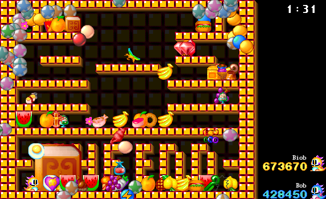

Copyright
In the current version most graphics have been made by David
Gowers, based on graphics from McSebi.
Almost all sounds, background musics and
levels are directly taken from the MacOS version of Bub &
Bob 1 by McSebi, and redistributed with his gracious
permission.
http://www.mcsebi.de
The game logic itself is protected by the MIT License.
Authors
- Programming: Armin Rigo
- Art: David Gowers, based on graphics from McSebi
- Levels: Gio & Odie & Michel-Stéphane & Armin
- Special thanks: Odie & Brachamutanda
- Beta-testers: IMA Connection
The End
